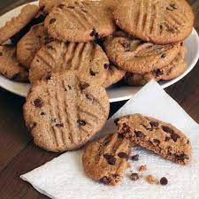

Valkyrie Cookies

Description
The preferred fuel for Asgard's famed warrior maidens.
Chewy peanut butter cookies with rich dark-chcolate chips.
Ingredients
- 2 1/4 cups white flour
- 1 teaspoon baking soda
- 1/2 teaspoon salt
- 1 1/2 cups creamy peanut butter
- 1 cup unsalted butter, softened
- 3/4 cup packed dark brown sugar
- 2/3 cup white sugar
- 2 teaspoons vanilla extract
- 2 eggs
- 1 1/2 cups dark chocolate chips
Steps
- Preheat oven to 350 degrees Fahrenheit. Grease baking
sheet, set aside
- Mix flour, soda, salt in a large bowl
- Cream together sugar and eggs with a large fork. Add in
the butter, and when mixture is smooth, add vanilla, then
peanut butter
- Add the wet ingredients to the large bowl containing the dry
ingredients, and mix thoroughly
- Fold in the dark chocolate chips
- Place 1 inch wide balls of cookie dough onto baking sheet.
Bake for 10-12 minutes at 350 degrees.